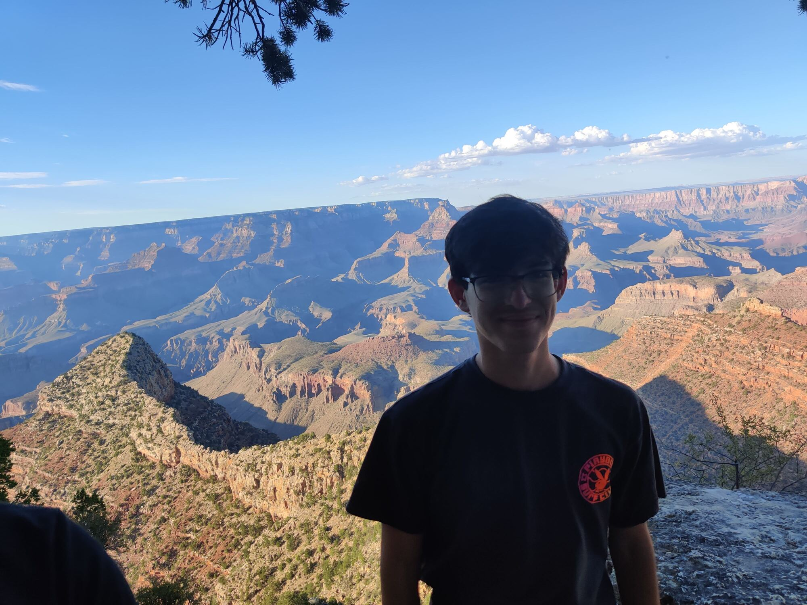

Hey there...
Welcome to my personal webpage! I'm a computer science student concentrating in Cybersecurity here at UNC Charlotte.
About me
In my free time I like to play video games, watch movies and play the guitar.

Welcome to my personal webpage! I'm a computer science student concentrating in Cybersecurity here at UNC Charlotte.
In my free time I like to play video games, watch movies and play the guitar.
